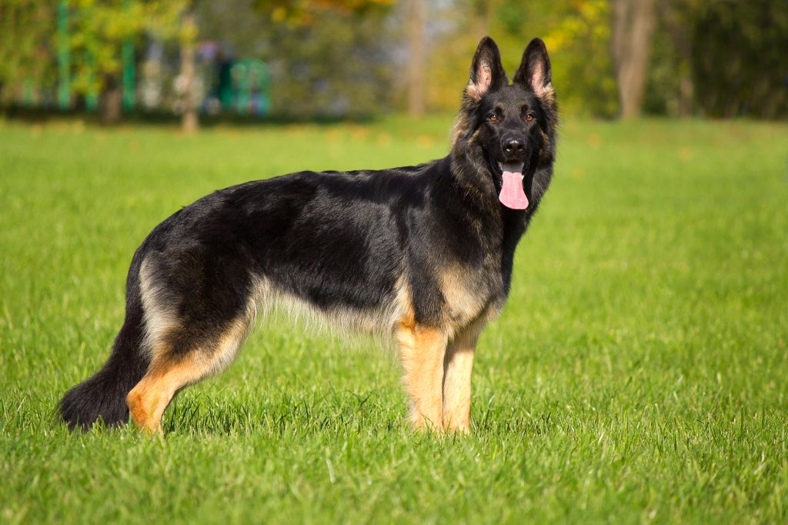

| דף ראשי | גזעים | מחלות | רקעים ותמונות | סקר | צרו קשר |
|---|
| קוקר ספאנייל |
| סמוייד |
| שפיץ יפני |
| פומרניאן |
| פודל |
| דני ענק |
| דלמטי |
| רועה גרמני |
| רועה קווקזי |
| רועה בלגי |
| בולדוג אמריקאי |
| בולדוג צרפתי |
| בולדוג אנגלי |
| צ'או צ'או |
| שיצ'ו |
| אמסטף |
| פינצ'ר |
| רוטווילר |
| דוברמן |
| האסקי סיבירי |
רועה גרמני
מידע נוסף
כלבים הפכו במאה האחרונה לחית המחמד המועדפת בכל בית. ישנם שימושים רבים לכלבים. החלק הראשון הוא כמובן כלב מחמד כתוספת לכל משפחה. זוהי תוספת שילדים קטנים נוטים להתחבר אליה מאוד ומעשירה מאוד את חיי הבית. בנוסף ישנם כלבי שמירה, כלבי תקיפה וסוגים נוספים. רועה גרמני הנו אחד הכלבים הנפוצים והמפורסמים. קצת על התפתחות הגזע..
רועה גרמני - מקור הגזע וקצת היסטוריה
מקורו של הרועה הגרמני החל בתוכנית גידול שהחלה בסוף המאה ה19- בה הוכלאו מספר גזעים של כלבי רועים אירופיים על מנת לתפקד כשומרים על החוות באירופה מפני חיות הבר שארבו לצאן ולבקר, לאחר מספר הכלאות נולד הרועה הגרמני שדומה מאוד לרועה הגרמני של ימינו או בכינויו כלב זאב אשר נתבע לאחר שמספר אנשים מפוקפקים אילפו רועים גרמניים ללחימה או תקיפה ואופן תקיפתו האכזרית והחייתית מזכירה זאב. גזע זה נחשב כאחד מכלבי העבודה הטובים ביותר מפני שהוא לומד מהר את הפקודות וכך קל לאלפו למגוון תפקידים החל בתקיפה של מחבלים ועד מציאת נעדרים בהריסות. כיום הרועה הגרמני הוא כלב מועדף ברוב צבאות העולם.
רועה גרמני - נתונים ומאפיינים
צבעו נע משחור לחום בכתמים על הגוף כל כלב צורה וצבע חום אחר (קיימים גם רועים לבקנים אבל הם מעטים במספר וצבעם מגיע בגלל מוטציה בגנים). משקל: נע סביב ה45-55 ק"ג גובה: 55-66 ס"מ אפיון מיוחד: זנב ארוך ומלא. אופי: הרועה הגרמני בטוח מאוד בעצמו, אמיץ, אוהב מאוד בני אדם, מאוד סקרן לגבי הסביבה וכמובן לאנשים שסובבים אותו שאותם הוא מחשיב לחלק מהלהקה. הרועה הגרמני מאוד אנרגטי ואוהב לרוץ, אבל כשצריך הרועה הגרמני שמבנהו שרירי, יכול לתקוף אדם ממוצע ולהשבית אותו ע"י נשיכה מאוד כואבת.
מחלות נפוצות וטיפול - כלב רועה גרמני
החיסרון הכי גדול של הרועה הגרמני נעוץ בבעיה גנטית אשר גורמת לבעיות אגן קשות המקשות על התפקוד הכללי, בסה"כ הרועה הגרמני הוא כלב בריא וכמו כל כלב יש לתת את החיסונים הקבועים. לכלבים ששוהים בחוץ מומלץ לרסס את איזור המחייה בדוחי קרציות ופשפשים.
